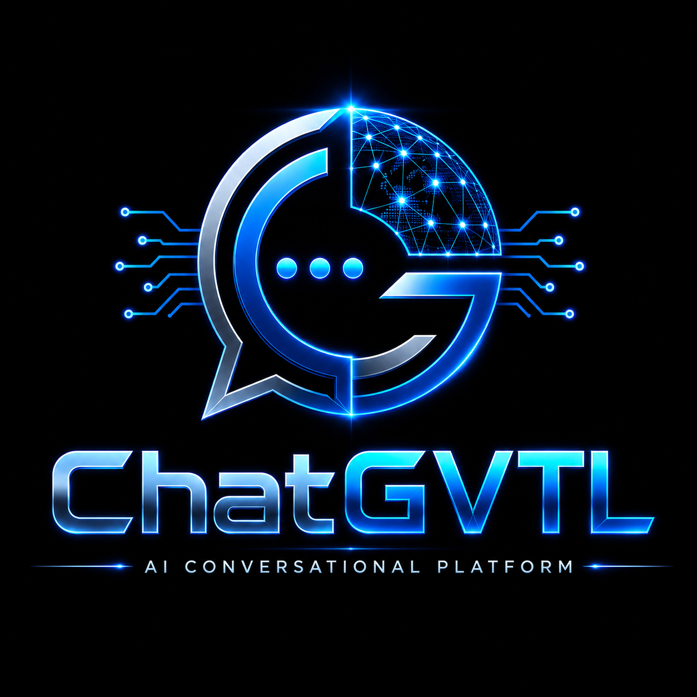
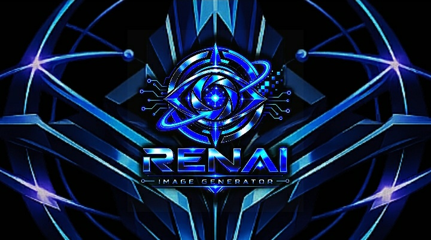

01
Fondasi, Legalitas & Tata Kelola
Penataan identitas, struktur, dokumentasi, legalitas, dan tata kelola perusahaan menjadi prioritas pada Foundation Stage.

PT RENAI GVTL Indonesia berfokus pada pembangunan fondasi perusahaan, riset, dan pengembangan teknologi Artificial Intelligence secara bertahap. Perjalanan ini mencakup pengembangan RENAI GVTL dan Chat GVTL sebagai bagian dari arah teknologi yang sedang dibangun.
Nama resmi: PT RENAI GVTL Indonesia. Nama brand dan ekosistem: RENAI GVTL / RenAI GVTL. Nama-nama tersebut digunakan sebagai variasi identitas dan brand yang dijelaskan secara konsisten melalui situs resmi ini.
Fokus PT RENAI GVTL Indonesia saat ini berada pada pembangunan fondasi, riset, eksperimen, dan pengembangan proyek awal.
Penataan identitas, struktur, dokumentasi, legalitas, dan tata kelola perusahaan menjadi prioritas pada Foundation Stage.
Riset dan eksperimen menjadi bagian penting dalam mencari pendekatan teknologi AI yang sesuai.
Chat GVTL sedang dikembangkan sebagai salah satu proyek awal dalam perjalanan RENAI GVTL.
Tiga arah teknologi yang sedang dikembangkan dan diteliti oleh PT RENAI GVTL Indonesia.
Model teknologi utama yang sedang dikembangkan sebagai bagian dari visi jangka panjang RENAI GVTL.
Jelajahi Teknologi →
Platform AI yang sedang dikembangkan melalui riset dan pengembangan bertahap.
Jelajahi Teknologi →
Gagasan teknologi generasi gambar berbasis Artificial Intelligence yang masih berada pada tahap awal.
Jelajahi Teknologi →
Chat GVTL dikembangkan dengan RENAI Router sebagai bagian dari riset dan pengembangan teknologi.
Product / Development
Catatan awal perjalanan pembangunan PT RENAI GVTL Indonesia.
Company / Foundation
Mengenal visi founder dalam membangun fondasi teknologi RENAI GVTL.
Founder / Vision
Founder & Owner PT RENAI GVTL Indonesia dan pengembang di balik proyek RENAI GVTL.
PT RENAI GVTL Indonesia berada pada Foundation Stage. Reno Aurora Redian Narendra Wijaya Putra Silvana adalah Founder & Owner, sementara Airin menjalankan peran Technology Lead untuk arah teknis dan pengembangan teknologi.